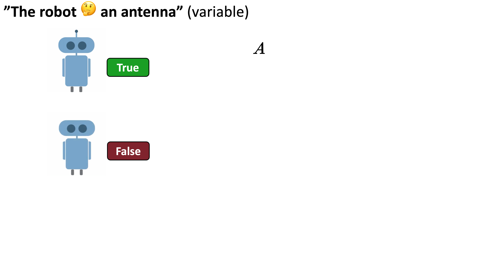
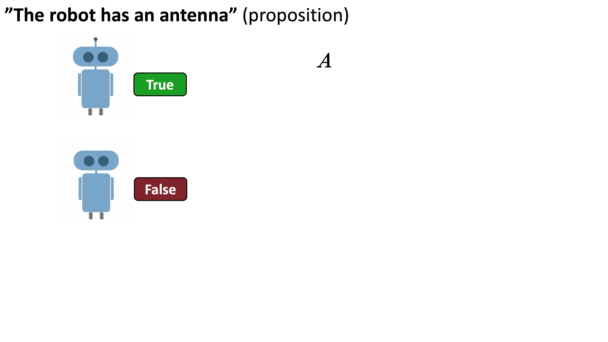
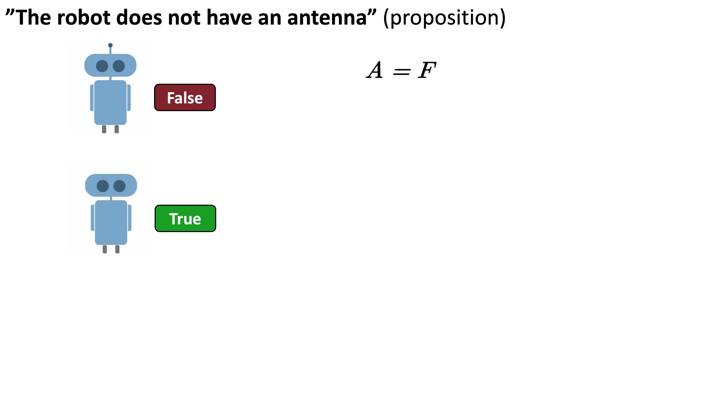
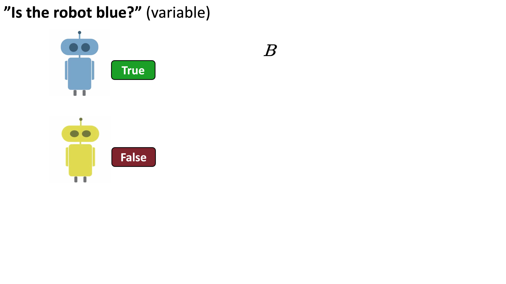
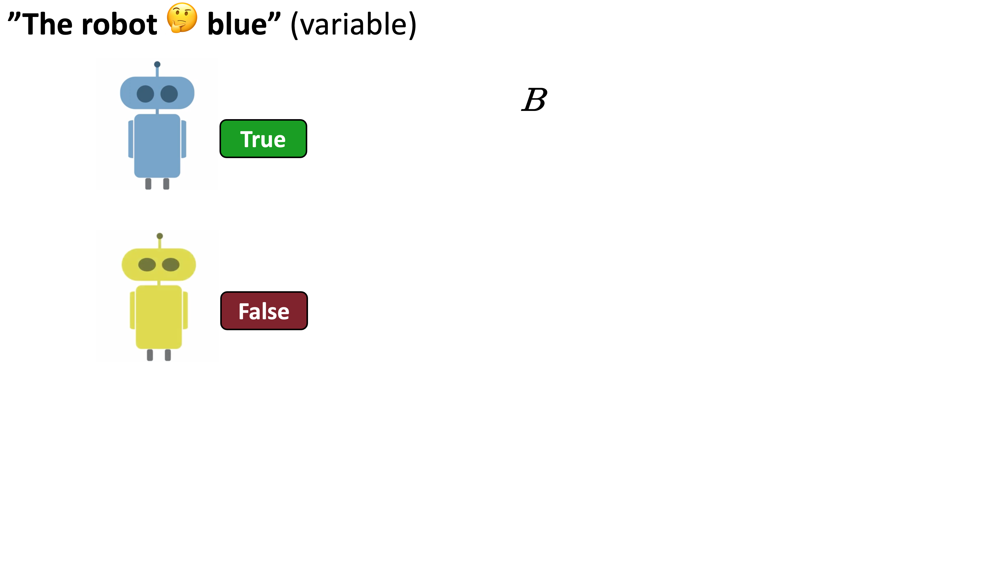
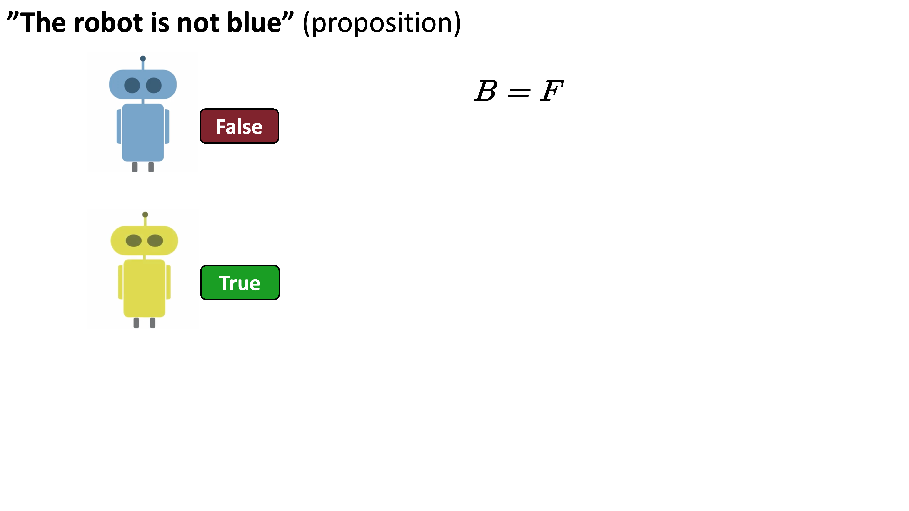
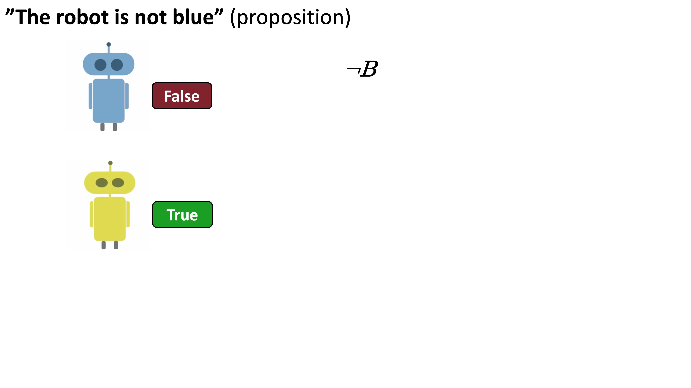
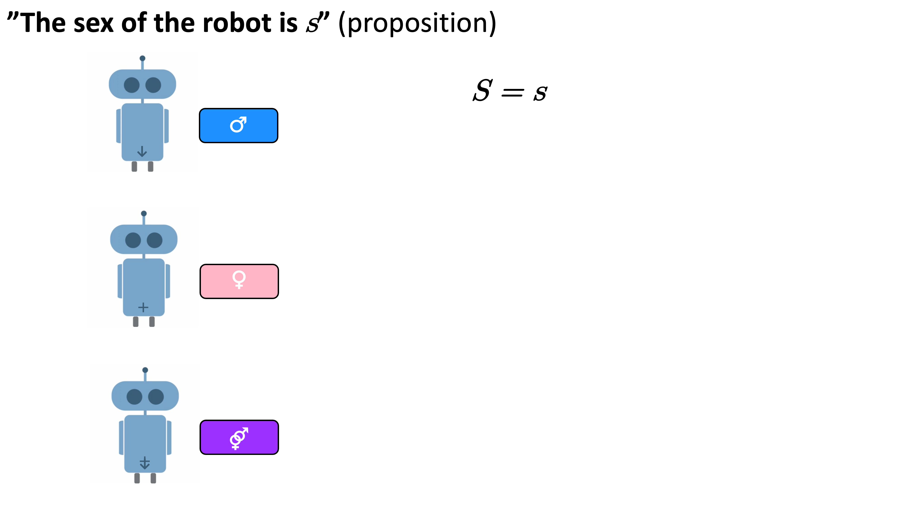
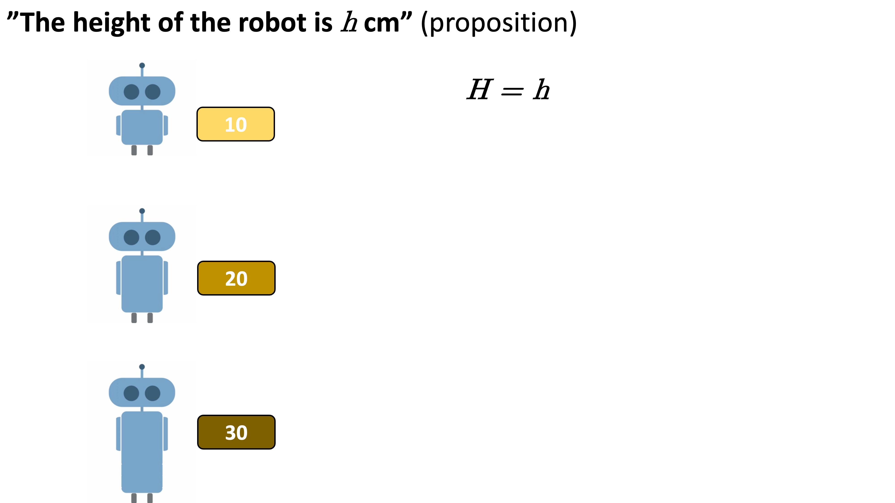

ss <-
expand_grid(A = c(TRUE, FALSE), B = c(TRUE, FALSE)) %>%
mutate(Ω = paste0("⍵", 1:n())) %>%
select(Ω, everything())
ss| Ω | A | B |
|---|---|---|
| ⍵1 | TRUE | TRUE |
| ⍵2 | TRUE | FALSE |
| ⍵3 | FALSE | TRUE |
| ⍵4 | FALSE | FALSE |
Statistical inference
2025-02-18
Ontological interpretations (probability as an objective feature of reality)
Limiting relative frequency (frequentist): The proportion of times an event occurs in an infinite sequence of trials (a.k.a. “long-run” relative frequency)
Physical chance/propensity: The inherent tendency or disposition of a physical system to produce a particular outcome
Epistemological interpretations (probability as a subjective measure of uncertainty)
Rational degree of belief in the truth of a proposition (subjective Bayesian): A personal but coherent assignment of probabilities to possible worlds, updated via Bayes’ rule
Rational degree of evidential support/the strength of an inductive argument (objective Bayesian): The proportion of possible worlds where both the hypothesis and the evidence are true, relative to the possible worlds where the evidence is true
Ontological interpretations (probability as an objective feature of reality)
Limiting relative frequency: Probability as a feature of infinite sequences of trials
Physical chance/propensity: Probability as a feature of physical systems
Epistemological interpretations (probability as a subjective measure of uncertainty)
Rational degree of belief: Probability as a feature of propositions
Rational degree of evidential support: Probability as a feature of arguments
Probability theory is a mathematical language that we use to:
represent knowledge with propositions (logical variables), and
reason about the plausibility of propositions, given a knowledge base, i.e.,
inductive reasoning: from premises known or assumed to be true to a conclusion that is likely to be true/uncertain
All of the things we say in science, all of the conclusions, are uncertain.
And it is of paramount importance, in order to make progress, that we recognize this ignorance and this doubt.
— Richard Feynman (1918 – 1988, Nobel-prize winning theoretical physicist)
Probability theory is a mathematical language that we use to:
represent knowledge with propositions (logical variables), and
reason about the plausibility of propositions, given a knowledge base, i.e.,
inductive reasoning: from premises known or assumed to be true to a conclusion that is likely to be true/uncertain
Inductive reasoning is scientific reasoning, including statistical inference
Probability theory is a mathematical language that we use to:
represent knowledge with propositions (logical variables), and
reason about the plausibility of propositions, given a knowledge base, i.e.,
inductive reasoning: from premises known or assumed to be true to a conclusion that is likely to be true/uncertain
Inductive reasoning is scientific reasoning, including statistical inference
Probability theory is a mathematical language that we use to:
represent knowledge with propositions (logical variables), and
reason about the plausibility of propositions, given a knowledge base, i.e.,
inductive reasoning: from premises known or assumed to be true to a conclusion that is likely to be true/uncertain
Inductive reasoning is scientific reasoning, including statistical inference
Probability theory is the logic of science, including data science
Probability theory is just counting!
Probability is a mathematical function that takes an argument and returns a real number between 0 and 1, which measures the inductive strength of the argument
\[ \frac{\text{# of possible worlds where the conclusion is true, in the universe where all premises are true}}{\text{# of possible worlds in the universe where all premises are true}} \]
Probability is conditional (on the premises and conclusion)
Probability theory is a very simple language
Logical (TRUE or FALSE)NOT (\(\lnot A\)), AND (\(A \land B\)), OR (\(A \lor B\)), IMPLIES (\(A \implies B\)), IFF (\(A \iff B\))NOT (complement rule), AND (Bayes’ theorem a.k.a. product rule), OR (sum rule)\[ P(\lnot A) = 1 - P(A) \quad \quad P(\lnot B) = 1 - P(B) \\ \]
Conjuction rule (AND): Product rule
\(P(A \land B) = P(A) \cdot P(B \mid A)\)
Iff \(A\) and \(B\) are independent, i.e., \(P(B \mid A) = P(B)\):
\(P(A \land B) = P(A) \cdot P(B)\)
Two events (or propositions) \(A\) and \(B\) are independent iff the probability of one remains unchanged knowing that the other has occurred (or is true)
\[P(A \mid B) = P(A)\]
\[P(B \mid A) = P(B)\]
\[ P(\lnot A) = 1 - P(A) \quad \quad P(\lnot B) = 1 - P(B) \\ \]
Conjuction rule (AND): Product rule
\(P(A \land B) = P(A) \cdot P(B \mid A)\)
Iff \(A\) and \(B\) are independent, i.e., \(P(B \mid A) = P(B)\):
\(P(A \land B) = P(A) \cdot P(B)\)
Two events (or propositions) \(A\) and \(B\) are independent iff the probability of one remains unchanged knowing that the other has occurred (or is true)
\[P(A \mid B) = P(A)\]
\[P(B \mid A) = P(B)\]
\[ P(\lnot A) = 1 - P(A) \quad \quad P(\lnot B) = 1 - P(B) \\ \]
Conjuction rule (AND): Product rule
\(P(A \land B) = P(A) \cdot P(B \mid A)\)
Iff \(A\) and \(B\) are independent, i.e., \(P(B \mid A) = P(B)\):
\(P(A \land B) = P(A) \cdot P(B)\)
Two events (or propositions) \(A\) and \(B\) are independent iff the probability of one remains unchanged knowing that the other has occurred (or is true)
\[P(A \mid B) = P(A)\]
\[P(B \mid A) = P(B)\]
\[ P(\lnot A) = 1 - P(A) \quad \quad P(\lnot B) = 1 - P(B) \\ \]
Conjuction rule (AND): Product rule
\(P(A \land B) = P(A) \cdot P(B \mid A)\)
Iff \(A\) and \(B\) are independent, i.e., \(P(B \mid A) = P(B)\):
\(P(A \land B) = P(A) \cdot P(B)\)
Two events (or propositions) \(A\) and \(B\) are independent iff the probability of one remains unchanged knowing that the other has occurred (or is true)
\[P(A \mid B) = P(A)\]
\[P(B \mid A) = P(B)\]
\[ P(\lnot A) = 1 - P(A) \quad \quad P(\lnot B) = 1 - P(B) \\ \]
Conjuction rule (AND): Product rule
\(P(A \land B) = P(A) \cdot P(B \mid A)\)
Iff \(A\) and \(B\) are independent, i.e., \(P(B \mid A) = P(B)\):
\(P(A \land B) = P(A) \cdot P(B)\)
Two events (or propositions) \(A\) and \(B\) are independent iff the probability of one remains unchanged knowing that the other has occurred (or is true)
\[P(A \mid B) = P(A)\]
\[P(B \mid A) = P(B)\]
\[ P(\lnot A) = 1 - P(A) \quad \quad P(\lnot B) = 1 - P(B) \\ \]
\[ P(B \mid A) = \frac{P(B) \cdot P(A \mid B)}{P(A)} \]
\[ P(\lnot A) = 1 - P(A) \quad \quad P(\lnot B) = 1 - P(B) \\ \]
\[ P(A \mid B) = \frac{P(A \land B)}{P(B)} \quad \quad P(B \mid A) = \frac{P(A \land B)}{P(A)} \]
Disjunction rule (OR): Sum rule
\(P(A \lor B) = P(A) + P(B) - P(A \land B)\)
Iff A and B are disjoint/mutually exclusive, i.e., \(P(A \land B) = 0\):
\(P(A \lor B) = P(A) + P(B)\)
\(H \:\) “The woman has breast cancer.”
\(E \:\) “The diagnostic test for breast cancer is positive.”
Given:
Prevalence: \(\; P(H) = 0.001\)
(i.e., 0.1% chance the woman has breast cancer)
Sensitivity: \(\; P(E \mid H) = 0.90\)
(i.e., 90% chance the test is positive if the woman has breast cancer)
Specificity: \(\; P(\lnot E \mid \lnot H) = 0.90\)
(i.e., 90% chance the test is negative if the woman does not have breast cancer)
Wanted:
\[ P(H \mid E) = \frac{P(H) \cdot P(E \mid H)}{P(E)} \]
\[P(H \mid E, K) = \frac{P(H \mid K) \cdot P(E \mid H, K)}{P(E \mid K)}\]
Don’t forget the background information (\(K\)) and that all probabilities are conditional!
\[ P(H \mid E) = \frac{P(H) \cdot P(E \mid H)}{P(E)} \]
\[ P(H \mid E) = \frac{P(H) \cdot P(E \mid H)}{P(E)} \]
\[ P(H \mid E) = \frac{P(H) \cdot P(E \mid H)}{P(H \land E) + P(\lnot H \land E)} \]
\[ P(H \mid E) = \frac{P(H) \cdot P(E \mid H)}{P(H) \cdot P(E \mid H) + P(\lnot H) \cdot P(E \mid \lnot H)} \]
\[ P(H \mid E) = \frac{P(H) \cdot P(E \mid H)}{P(E)} \]
\(P(H \mid E)\) is the probability of hypothesis \(H\) given evidence \(E\) (a.k.a. the posterior)
The numerator is the joint probability of hypothesis \(H\) and evidence \(E\)
\[ P(H \mid E) = \frac{P(H \land E)}{P(E)} \]
\(P(H \mid E)\) is the probability of hypothesis \(H\) given evidence \(E\) (a.k.a. the posterior)
The numerator is the joint probability of hypothesis \(H\) and evidence \(E\)
\[ P(H \mid E) = \frac{P(H) \cdot P(E \mid H)}{P(E)} \]
\(P(H \mid E)\) is the probability of hypothesis \(H\) given evidence \(E\) (a.k.a. the posterior)
The numerator is the joint probability of hypothesis \(H\) and evidence \(E\)
\[ P(H \mid E) = \frac{P(H) \cdot P(E \mid H)}{P(E)} \]
\(P(H \mid E)\) is the probability of hypothesis \(H\) given evidence \(E\) (a.k.a. the posterior)
The numerator is the joint probability of hypothesis \(H\) and evidence \(E\)
\[ P(H \mid E) = \frac{P(H) \cdot P(E \mid H)}{P(E)} \]
\(P(H \mid E)\) is the probability of hypothesis \(H\) given evidence \(E\) (a.k.a. the posterior)
The numerator is the joint probability of hypothesis \(H\) and evidence \(E\)
\(P(H)\) is the probability of hypothesis \(H\) (a.k.a. the prior)
\(P(E \mid H)\) is the probability of evidence \(E\) given hypothesis \(H\) (a.k.a. the likelihood)
\[ P(H \mid E) = \frac{P(H) \cdot P(E \mid H)}{P(H \land E) + P(\lnot H \land E)} \]
\(P(H \mid E)\) is the probability of hypothesis \(H\) given evidence \(E\) (a.k.a. the posterior)
The numerator is the joint probability of hypothesis \(H\) and evidence \(E\)
\(P(H)\) is the probability of hypothesis \(H\) (a.k.a. the prior)
\(P(E \mid H)\) is the probability of evidence \(E\) given hypothesis \(H\) (a.k.a. the likelihood)
\[ P(H \mid E) = \frac{P(H) \cdot P(E \mid H)}{P(H) \cdot P(E \mid H) + P(\lnot H) \cdot P(E \mid \lnot H)} \]
\(P(H \mid E)\) is the probability of hypothesis \(H\) given evidence \(E\) (a.k.a. the posterior)
The numerator is the joint probability of hypothesis \(H\) and evidence \(E\)
\(P(H)\) is the probability of hypothesis \(H\) (a.k.a. the prior)
\(P(E \mid H)\) is the probability of evidence \(E\) given hypothesis \(H\) (a.k.a. the likelihood)
\[ P(H \mid E) = \frac{P(H) \cdot P(E \mid H)}{\sum_{i=1}^n P(H_i) \cdot P(E \mid H_i)} \]
\(P(H \mid E)\) is the probability of hypothesis \(H\) given evidence \(E\) (a.k.a. the posterior)
The numerator is the joint probability of hypothesis \(H\) and evidence \(E\)
\(P(H)\) is the probability of hypothesis \(H\) (a.k.a. the prior)
\(P(E \mid H)\) is the probability of evidence \(E\) given hypothesis \(H\) (a.k.a. the likelihood)
\[ P(H \mid E) = \frac{P(H) \cdot P(E \mid H)}{\int P(H) \cdot P(E \mid H) \,dH } \]
\(P(H \mid E)\) is the probability of hypothesis \(H\) given evidence \(E\) (a.k.a. the posterior)
The numerator is the joint probability of hypothesis \(H\) and evidence \(E\)
\(P(H)\) is the probability of hypothesis \(H\) (a.k.a. the prior)
\(P(E \mid H)\) is the probability of evidence \(E\) given hypothesis \(H\) (a.k.a. the likelihood)
In most cases, this integral is intractable, which historically restricted Bayesian inference to simple cases where an exact solution was possible
The advent of modern computers and MCMC methods enabled efficient and accurate numerical approximations of this integral, making Bayesian inference widely applicable
\[ P(H \mid E) = \frac{P(H) \cdot P(E \mid H)}{P(H) \cdot P(E \mid H) + P(\lnot H) \cdot P(E \mid \lnot H)} \]
\(P(H) = 0.001 \;\) prior/prevalence
\(P(E \mid H) = 0.90 \;\) likelihood/sensitivity
\(P(\lnot E \mid \lnot H) = 0.90 \;\) specificity
\(P(E \mid \lnot H) = 0.10 \;\) false positive rate = (1 - specificity)
\(P(\lnot H) = 0.999\;\) (1 - prevalence)
\(P(H \mid E) =\ ? \;\) posterior
The main goal of Bayesian inference is to estimate the posterior \(\; P(H \mid E)\)
The main goal of frequentist inference is to control the false positive rate \(\; P(E \mid \lnot H)\) at \(\alpha = 0.05\) in the “long run”
\[ P(H \mid E) = \frac{P(H) \cdot P(E \mid H)}{P(H) \cdot P(E \mid H) + P(\lnot H) \cdot P(E \mid \lnot H)} \]
\[ P(H \mid E) = \frac{0.001 \times 0.90}{(0.001 \times 0.90) + (0.999 \times 0.10)} = \frac{0.0009}{0.0009 + 0.0999} \approx \frac{0.0009}{0.1008} \approx 0.00893 \]
Thus, even with a positive test, the probability that the woman actually has breast cancer is only about 0.9%
Failure to take prevalence (a.k.a. the base rate) into account is known in medicine as the base rate fallacy
This example highlights the critical role of the prior probability when evaluating and testing hypothesis


Sally Clark was found guilty of the murder of her two infant sons
The defense argued that both children had died of sudden infant death syndrome
The prosecution relied on flawed statistical evidence presented by a paediatrician who testified that the probability of two infants dying of SIDS in the same family is 1 in 73M
The jury mistakenly interpreted this probability (of the evidence given the presumption of innocence) with the probability of Sally Clark’s innocence given the evidence
All three examples (base-rate fallacy, prosecutor’s fallacy, and the scientific study) commit the fallacy of the transposed conditional, i.e., confuse the probability of the evidence given the hypothesis (“sampling probability”) with the probability of the hypothesis given the evidence (“inferential probability”)
P(evidence | hypothesis) = P(hypothesis | evidence)
Base-rate fallacy
P(vaccinated | hospitalized) = P(hospitalized | vaccinated)
Prosecutor’s fallacy
P(two deaths | innocent) = P(innocent | two deaths)
Scientific study
P(same or larger effect | null hypothesis) = P(null hypothesis | same or larger effect)
Shmueli (2010) To Explain or to Predict?
\[ \begin{array}{ll} 1. & \text{data (measurements of observables)} \\ 2. & \text{model of the DGP} \\ \hline \therefore & \text{unknown quantities} \\ \end{array} \]
Models are simplified, idealized representations/abstractions of reality!
Don’t fall in love with your models!
Don’t fall for the sin of reification!
Don’t confuse the map with the territory!
Statistical models = probability distributions of random variables
Statistical models = probability distributions of random variables
It turns out that empirical research questions come down entirely to describing the probability distributions of random variables. That’s, well, that’s really all that quantitative empirical research is. Sorry!
— Nick Huntington-Klein The Effect [free online book]
A statistical model is a probability distribution of one or more random variables chosen to represent the data generating process (DGP)
If one of the standard probability distributions (e.g., uniform, binomial, normal) is a useful abstraction of the real data generating process you need to model, then it can be used as the statistical model for your inferential data analysis (if not, you can always build your own)
Standard probability distributions serve as ready-made “data stories”, i.e., different sets of premises/assumptions about the DGP
Statistical models = probability distributions of random variables
Given a universe/sample space (\(\Omega\))
A probability distribution is a function (\(p\)) that assigns a probability* to each possible world/outcome (\(\omega\))
\[ p: \Omega \to [0, 1] \]
Given a universe/sample space (\(\Omega\))
A probability distribution is a function (\(p\)) that assigns a probability* to each possible world/outcome (\(\omega\))
| Ω | A | B | p |
|---|---|---|---|
| ⍵1 | TRUE | TRUE | 0.2 |
| ⍵2 | TRUE | FALSE | 0.3 |
| ⍵3 | FALSE | TRUE | 0.4 |
| ⍵4 | FALSE | FALSE | 0.1 |
\[\sum_{\omega \in \Omega} p(\omega) = 1\]
Given a universe/sample space (\(\Omega\))
A probability distribution is a function (\(p\)) that assigns a probability* to each possible world/outcome (\(\omega\))
| Ω | A | B | p |
|---|---|---|---|
| ⍵1 | TRUE | TRUE | 0.25 |
| ⍵2 | TRUE | FALSE | 0.25 |
| ⍵3 | FALSE | TRUE | 0.25 |
| ⍵4 | FALSE | FALSE | 0.25 |
\[\sum_{\omega \in \Omega} p(\omega) = 1\]
An event is a subset of the sample space, including the empty set (\(\emptyset\)) and the sample space itself (\(\Omega\))
Event \(X\): the subset of the sample space where proposition \(X\) is true
The terms proposition and event are often used interchangeably
Probability applies to propositions/events
\(P(X)\) = probability that proposition \(X\) is true
\(P(X)\) = probability that event \(X\) occurs
| Ω | A | B | X |
|---|---|---|---|
| ⍵1 | TRUE | TRUE | TRUE |
| ⍵2 | TRUE | FALSE | TRUE |
| ⍵3 | FALSE | TRUE | TRUE |
| ⍵4 | FALSE | FALSE | FALSE |
\[P(X) = \sum_{\omega \in X} p(\omega)\]
\[P(X) = \sum_{\omega \in X} p(\omega)\]
\[P(X) = \sum_{\omega \in X} p(\omega)\]
\[P(X) = \sum_{\omega \in X} p(\omega)\]
\[P(X) = \sum_{\omega \in X} p(\omega)\]
ss %>%
mutate(p = 1 / n()) %>%
mutate(X = A | B) %>%
filter(X) %>%
summarize(P = sum(p)) %>%
pull(P)[1] 0.75[1] 0.75\[P(X) = \sum_{\omega \in X} p(\omega)\]
\[P(X) = \sum_{\omega \in X} p(\omega)\]
\[P(X) = \sum_{\omega \in X} p(\omega)\]
\[P(X) = \sum_{\omega \in X} p(\omega)\]
Given a universe/sample space (\(\Omega\))
A probability distribution is a function (\(p\)) that assigns a probability* to each possible world/outcome (\(\omega\))
Given a universe/sample space (\(\Omega\))
A probability distribution is a function (\(p\)) that assigns a probability* to each possible world/outcome (\(\omega\))
Given a universe/sample space (\(\Omega\))
A probability distribution is a function (\(p\)) that assigns a probability* to each possible world/outcome (\(\omega\))
| Ω | A | B | p |
|---|---|---|---|
| ⍵1 | TRUE | TRUE | NA |
| ⍵2 | TRUE | FALSE | NA |
| ⍵3 | FALSE | TRUE | NA |
| ⍵4 | FALSE | FALSE | NA |
[1] 0.25Given a universe/sample space (\(\Omega\))
A probability distribution is a function (\(p\)) that assigns a probability* to each possible world/outcome (\(\omega\))
| Ω | A | B | p |
|---|---|---|---|
| ⍵1 | TRUE | TRUE | 0.25 |
| ⍵2 | TRUE | FALSE | NA |
| ⍵3 | FALSE | TRUE | NA |
| ⍵4 | FALSE | FALSE | NA |
Given a universe/sample space (\(\Omega\))
A probability distribution is a function (\(p\)) that assigns a probability* to each possible world/outcome (\(\omega\))
| Ω | A | B | p |
|---|---|---|---|
| ⍵1 | TRUE | TRUE | 0.25 |
| ⍵2 | TRUE | FALSE | NA |
| ⍵3 | FALSE | TRUE | NA |
| ⍵4 | FALSE | FALSE | NA |
[1] 0.25Given a universe/sample space (\(\Omega\))
A probability distribution is a function (\(p\)) that assigns a probability* to each possible world/outcome (\(\omega\))
| Ω | A | B | p |
|---|---|---|---|
| ⍵1 | TRUE | TRUE | 0.25 |
| ⍵2 | TRUE | FALSE | 0.25 |
| ⍵3 | FALSE | TRUE | NA |
| ⍵4 | FALSE | FALSE | NA |
Given a universe/sample space (\(\Omega\))
A probability distribution is a function (\(p\)) that assigns a probability* to each possible world/outcome (\(\omega\))
| Ω | A | B | p |
|---|---|---|---|
| ⍵1 | TRUE | TRUE | 0.25 |
| ⍵2 | TRUE | FALSE | 0.25 |
| ⍵3 | FALSE | TRUE | NA |
| ⍵4 | FALSE | FALSE | NA |
[1] 0.25Given a universe/sample space (\(\Omega\))
A probability distribution is a function (\(p\)) that assigns a probability* to each possible world/outcome (\(\omega\))
| Ω | A | B | p |
|---|---|---|---|
| ⍵1 | TRUE | TRUE | 0.25 |
| ⍵2 | TRUE | FALSE | 0.25 |
| ⍵3 | FALSE | TRUE | 0.25 |
| ⍵4 | FALSE | FALSE | NA |
Given a universe/sample space (\(\Omega\))
A probability distribution is a function (\(p\)) that assigns a probability* to each possible world/outcome (\(\omega\))
| Ω | A | B | p |
|---|---|---|---|
| ⍵1 | TRUE | TRUE | 0.25 |
| ⍵2 | TRUE | FALSE | 0.25 |
| ⍵3 | FALSE | TRUE | 0.25 |
| ⍵4 | FALSE | FALSE | NA |
[1] 0.25Given a universe/sample space (\(\Omega\))
A probability distribution is a function (\(p\)) that assigns a probability* to each possible world/outcome (\(\omega\))
| Ω | A | B | p |
|---|---|---|---|
| ⍵1 | TRUE | TRUE | 0.25 |
| ⍵2 | TRUE | FALSE | 0.25 |
| ⍵3 | FALSE | TRUE | 0.25 |
| ⍵4 | FALSE | FALSE | 0.25 |
In the absence of additional information, outcomes in the sample space are equally likely (Laplace’s principle of indifference)
The principle of indifference is a special case of Jayne’s principle of maximum entropy
Given a universe/sample space (\(\Omega\))
A probability distribution is a function (\(p\)) that assigns a probability* to each possible world/outcome (\(\omega\))
Given a universe/sample space (\(\Omega\))
A probability distribution is a function (\(p\)) that assigns a probability* to each possible world/outcome (\(\omega\))
Given a universe/sample space (\(\Omega\))
A probability distribution is a function (\(p\)) that assigns a probability* to each possible world/outcome (\(\omega\))
| Ω | A | B | p | E |
|---|---|---|---|---|
| ⍵1 | TRUE | TRUE | NA | FALSE |
| ⍵2 | TRUE | FALSE | NA | FALSE |
| ⍵3 | FALSE | TRUE | NA | TRUE |
| ⍵4 | FALSE | FALSE | NA | TRUE |
[1] 0Given a universe/sample space (\(\Omega\))
A probability distribution is a function (\(p\)) that assigns a probability* to each possible world/outcome (\(\omega\))
| Ω | A | B | p | E |
|---|---|---|---|---|
| ⍵1 | TRUE | TRUE | 0 | FALSE |
| ⍵2 | TRUE | FALSE | NA | FALSE |
| ⍵3 | FALSE | TRUE | NA | TRUE |
| ⍵4 | FALSE | FALSE | NA | TRUE |
Given a universe/sample space (\(\Omega\))
A probability distribution is a function (\(p\)) that assigns a probability* to each possible world/outcome (\(\omega\))
| Ω | A | B | p | E |
|---|---|---|---|---|
| ⍵1 | TRUE | TRUE | 0 | FALSE |
| ⍵2 | TRUE | FALSE | NA | FALSE |
| ⍵3 | FALSE | TRUE | NA | TRUE |
| ⍵4 | FALSE | FALSE | NA | TRUE |
[1] 0Given a universe/sample space (\(\Omega\))
A probability distribution is a function (\(p\)) that assigns a probability* to each possible world/outcome (\(\omega\))
| Ω | A | B | p | E |
|---|---|---|---|---|
| ⍵1 | TRUE | TRUE | 0 | FALSE |
| ⍵2 | TRUE | FALSE | 0 | FALSE |
| ⍵3 | FALSE | TRUE | NA | TRUE |
| ⍵4 | FALSE | FALSE | NA | TRUE |
Given a universe/sample space (\(\Omega\))
A probability distribution is a function (\(p\)) that assigns a probability* to each possible world/outcome (\(\omega\))
| Ω | A | B | p | E |
|---|---|---|---|---|
| ⍵1 | TRUE | TRUE | 0 | FALSE |
| ⍵2 | TRUE | FALSE | 0 | FALSE |
| ⍵3 | FALSE | TRUE | NA | TRUE |
| ⍵4 | FALSE | FALSE | NA | TRUE |
[1] 0.5Given a universe/sample space (\(\Omega\))
A probability distribution is a function (\(p\)) that assigns a probability* to each possible world/outcome (\(\omega\))
| Ω | A | B | p | E |
|---|---|---|---|---|
| ⍵1 | TRUE | TRUE | 0.0 | FALSE |
| ⍵2 | TRUE | FALSE | 0.0 | FALSE |
| ⍵3 | FALSE | TRUE | 0.5 | TRUE |
| ⍵4 | FALSE | FALSE | NA | TRUE |
Given a universe/sample space (\(\Omega\))
A probability distribution is a function (\(p\)) that assigns a probability* to each possible world/outcome (\(\omega\))
| Ω | A | B | p | E |
|---|---|---|---|---|
| ⍵1 | TRUE | TRUE | 0.0 | FALSE |
| ⍵2 | TRUE | FALSE | 0.0 | FALSE |
| ⍵3 | FALSE | TRUE | 0.5 | TRUE |
| ⍵4 | FALSE | FALSE | NA | TRUE |
[1] 0.5Given a universe/sample space (\(\Omega\))
A probability distribution is a function (\(p\)) that assigns a probability* to each possible world/outcome (\(\omega\))
| Ω | A | B | p | E |
|---|---|---|---|---|
| ⍵1 | TRUE | TRUE | 0.0 | FALSE |
| ⍵2 | TRUE | FALSE | 0.0 | FALSE |
| ⍵3 | FALSE | TRUE | 0.5 | TRUE |
| ⍵4 | FALSE | FALSE | 0.5 | TRUE |
\(p\) is a model that encodes our premises/assumptions/evidence/knowledge about the world in general
In the context of statistical inference, \(p\) is a statistical model that encodes our knowledge about the DGP
Rather than enumerating each probability or specifying each premise/assumption, \(p\) provides a compact and elegant representation of our knowledge about the DGP
In the absence of additional information, the principle of indifference (or maximum entropy) dictates that all outcomes are equally likely, resulting in a uniform distribution
\[p(w) = \frac{1}{|\Omega|} = \frac{1}{n}\]
Statistical models = probability distributions of random variables
\[ X: \Omega \to \mathbb{R} \]
\[X(\omega) = x\]
\[ X: \Omega \to \mathbb{R} \]
\[X(\omega) = x\]










Logical, Numeric, or Character/Factor variable (data object) in R that can take one of multiple valuesLogical, Numeric, or Character/Factor variable (data object) in R that can take one of multiple valuesLogical, Numeric, or Character/Factor variable (data object) in R that can take one of multiple valuesThis data frame represents the universe/sample space (\(\Omega\)), where each column corresponds to a random variable (A, B, S, H, W) and each row represents a possible world/outcome (\(\omega\))
This is analogous to our earlier, simpler example with only logical variables A and B
The same principles and operations apply (including the calculation of probabilities and application of probability distributions), regardless of whether the random variables are logical, numeric, or categorical, since they all evaluate to propositions
\(\{ P_1, P_2, \ldots, P_n \} = \text{set of disjoint and exhaustive events (i.e., partitions of the sample space)}\)
\(P(E) = \sum_{i=1}^n P(P_i \land E)\)
\(P(E) = \sum_{i=1}^n P(P_i) \cdot P(E \mid P_i)\)
\(P(E) = \int P(H) P(E \mid H) \, dH\)
A statistical association is a logical relationship between two propositions/events and does not imply a causal relationship between them
From Pearl and Mackenzie (2018) The Book of Why

Given a probability distribution \(p\), the probability of proposition/event \(X\) is:
\[P(X) = \sum_{\omega \in X} p(\omega)\]
For example, given the uniform probability distribution \(p\), \(P(X)\) for \(X = A \lor B\) is:
Given a probability distribution \(p\), the probability of proposition/event \(X\) is:
\[P(X) = \sum_{\omega \in X} p(\omega)\]
For example, given the uniform probability distribution \(p\), \(P(X)\) for \(X = A \lor B\) is:
A | B | E | H |
|---|---|---|---|
TRUE | TRUE | TRUE | TRUE |
TRUE | FALSE | TRUE | TRUE |
FALSE | TRUE | TRUE | TRUE |
FALSE | FALSE | TRUE | FALSE |
P(H | E) = 0.75 | |||
H = (10 + 10 * c(0, 1, 2))
W = H * 2
expand.grid(
A = c(TRUE, FALSE),
B = c(TRUE, FALSE),
S = factor(c("M", "F", "N")),
H = H,
W = W
) %>%
mutate(Ω = paste0("⍵", 1:n())) %>%
select(Ω, everything()) %>%
mutate(p = 1 / n()) %>%
rowwise() %>%
mutate(
P1 = H == (10 + 10 * as.integer(S)),
P2 = W == H * 2,
E = P1 & P2) %>%
ungroup() %>%
mutate(p = ifelse(E, p / sum(p[E]), 0))| Ω | A | B | S | H | W | p | P1 | P2 | E |
|---|---|---|---|---|---|---|---|---|---|
| ⍵1 | TRUE | TRUE | M | 10 | 20 | 0.000 | FALSE | TRUE | FALSE |
| ⍵2 | FALSE | TRUE | M | 10 | 20 | 0.000 | FALSE | TRUE | FALSE |
| ⍵3 | TRUE | FALSE | M | 10 | 20 | 0.000 | FALSE | TRUE | FALSE |
| ⍵4 | FALSE | FALSE | M | 10 | 20 | 0.000 | FALSE | TRUE | FALSE |
| ⍵5 | TRUE | TRUE | F | 10 | 20 | 0.000 | FALSE | TRUE | FALSE |
| ⍵6 | FALSE | TRUE | F | 10 | 20 | 0.000 | FALSE | TRUE | FALSE |
| ⍵7 | TRUE | FALSE | F | 10 | 20 | 0.000 | FALSE | TRUE | FALSE |
| ⍵8 | FALSE | FALSE | F | 10 | 20 | 0.000 | FALSE | TRUE | FALSE |
| ⍵9 | TRUE | TRUE | N | 10 | 20 | 0.000 | FALSE | TRUE | FALSE |
| ⍵10 | FALSE | TRUE | N | 10 | 20 | 0.000 | FALSE | TRUE | FALSE |
| ⍵11 | TRUE | FALSE | N | 10 | 20 | 0.000 | FALSE | TRUE | FALSE |
| ⍵12 | FALSE | FALSE | N | 10 | 20 | 0.000 | FALSE | TRUE | FALSE |
| ⍵13 | TRUE | TRUE | M | 20 | 20 | 0.000 | FALSE | FALSE | FALSE |
| ⍵14 | FALSE | TRUE | M | 20 | 20 | 0.000 | FALSE | FALSE | FALSE |
| ⍵15 | TRUE | FALSE | M | 20 | 20 | 0.000 | FALSE | FALSE | FALSE |
| ⍵16 | FALSE | FALSE | M | 20 | 20 | 0.000 | FALSE | FALSE | FALSE |
| ⍵17 | TRUE | TRUE | F | 20 | 20 | 0.000 | TRUE | FALSE | FALSE |
| ⍵18 | FALSE | TRUE | F | 20 | 20 | 0.000 | TRUE | FALSE | FALSE |
| ⍵19 | TRUE | FALSE | F | 20 | 20 | 0.000 | TRUE | FALSE | FALSE |
| ⍵20 | FALSE | FALSE | F | 20 | 20 | 0.000 | TRUE | FALSE | FALSE |
| ⍵21 | TRUE | TRUE | N | 20 | 20 | 0.000 | FALSE | FALSE | FALSE |
| ⍵22 | FALSE | TRUE | N | 20 | 20 | 0.000 | FALSE | FALSE | FALSE |
| ⍵23 | TRUE | FALSE | N | 20 | 20 | 0.000 | FALSE | FALSE | FALSE |
| ⍵24 | FALSE | FALSE | N | 20 | 20 | 0.000 | FALSE | FALSE | FALSE |
| ⍵25 | TRUE | TRUE | M | 30 | 20 | 0.000 | TRUE | FALSE | FALSE |
| ⍵26 | FALSE | TRUE | M | 30 | 20 | 0.000 | TRUE | FALSE | FALSE |
| ⍵27 | TRUE | FALSE | M | 30 | 20 | 0.000 | TRUE | FALSE | FALSE |
| ⍵28 | FALSE | FALSE | M | 30 | 20 | 0.000 | TRUE | FALSE | FALSE |
| ⍵29 | TRUE | TRUE | F | 30 | 20 | 0.000 | FALSE | FALSE | FALSE |
| ⍵30 | FALSE | TRUE | F | 30 | 20 | 0.000 | FALSE | FALSE | FALSE |
| ⍵31 | TRUE | FALSE | F | 30 | 20 | 0.000 | FALSE | FALSE | FALSE |
| ⍵32 | FALSE | FALSE | F | 30 | 20 | 0.000 | FALSE | FALSE | FALSE |
| ⍵33 | TRUE | TRUE | N | 30 | 20 | 0.000 | FALSE | FALSE | FALSE |
| ⍵34 | FALSE | TRUE | N | 30 | 20 | 0.000 | FALSE | FALSE | FALSE |
| ⍵35 | TRUE | FALSE | N | 30 | 20 | 0.000 | FALSE | FALSE | FALSE |
| ⍵36 | FALSE | FALSE | N | 30 | 20 | 0.000 | FALSE | FALSE | FALSE |
| ⍵37 | TRUE | TRUE | M | 10 | 40 | 0.000 | FALSE | FALSE | FALSE |
| ⍵38 | FALSE | TRUE | M | 10 | 40 | 0.000 | FALSE | FALSE | FALSE |
| ⍵39 | TRUE | FALSE | M | 10 | 40 | 0.000 | FALSE | FALSE | FALSE |
| ⍵40 | FALSE | FALSE | M | 10 | 40 | 0.000 | FALSE | FALSE | FALSE |
| ⍵41 | TRUE | TRUE | F | 10 | 40 | 0.000 | FALSE | FALSE | FALSE |
| ⍵42 | FALSE | TRUE | F | 10 | 40 | 0.000 | FALSE | FALSE | FALSE |
| ⍵43 | TRUE | FALSE | F | 10 | 40 | 0.000 | FALSE | FALSE | FALSE |
| ⍵44 | FALSE | FALSE | F | 10 | 40 | 0.000 | FALSE | FALSE | FALSE |
| ⍵45 | TRUE | TRUE | N | 10 | 40 | 0.000 | FALSE | FALSE | FALSE |
| ⍵46 | FALSE | TRUE | N | 10 | 40 | 0.000 | FALSE | FALSE | FALSE |
| ⍵47 | TRUE | FALSE | N | 10 | 40 | 0.000 | FALSE | FALSE | FALSE |
| ⍵48 | FALSE | FALSE | N | 10 | 40 | 0.000 | FALSE | FALSE | FALSE |
| ⍵49 | TRUE | TRUE | M | 20 | 40 | 0.000 | FALSE | TRUE | FALSE |
| ⍵50 | FALSE | TRUE | M | 20 | 40 | 0.000 | FALSE | TRUE | FALSE |
| ⍵51 | TRUE | FALSE | M | 20 | 40 | 0.000 | FALSE | TRUE | FALSE |
| ⍵52 | FALSE | FALSE | M | 20 | 40 | 0.000 | FALSE | TRUE | FALSE |
| ⍵53 | TRUE | TRUE | F | 20 | 40 | 0.125 | TRUE | TRUE | TRUE |
| ⍵54 | FALSE | TRUE | F | 20 | 40 | 0.125 | TRUE | TRUE | TRUE |
| ⍵55 | TRUE | FALSE | F | 20 | 40 | 0.125 | TRUE | TRUE | TRUE |
| ⍵56 | FALSE | FALSE | F | 20 | 40 | 0.125 | TRUE | TRUE | TRUE |
| ⍵57 | TRUE | TRUE | N | 20 | 40 | 0.000 | FALSE | TRUE | FALSE |
| ⍵58 | FALSE | TRUE | N | 20 | 40 | 0.000 | FALSE | TRUE | FALSE |
| ⍵59 | TRUE | FALSE | N | 20 | 40 | 0.000 | FALSE | TRUE | FALSE |
| ⍵60 | FALSE | FALSE | N | 20 | 40 | 0.000 | FALSE | TRUE | FALSE |
| ⍵61 | TRUE | TRUE | M | 30 | 40 | 0.000 | TRUE | FALSE | FALSE |
| ⍵62 | FALSE | TRUE | M | 30 | 40 | 0.000 | TRUE | FALSE | FALSE |
| ⍵63 | TRUE | FALSE | M | 30 | 40 | 0.000 | TRUE | FALSE | FALSE |
| ⍵64 | FALSE | FALSE | M | 30 | 40 | 0.000 | TRUE | FALSE | FALSE |
| ⍵65 | TRUE | TRUE | F | 30 | 40 | 0.000 | FALSE | FALSE | FALSE |
| ⍵66 | FALSE | TRUE | F | 30 | 40 | 0.000 | FALSE | FALSE | FALSE |
| ⍵67 | TRUE | FALSE | F | 30 | 40 | 0.000 | FALSE | FALSE | FALSE |
| ⍵68 | FALSE | FALSE | F | 30 | 40 | 0.000 | FALSE | FALSE | FALSE |
| ⍵69 | TRUE | TRUE | N | 30 | 40 | 0.000 | FALSE | FALSE | FALSE |
| ⍵70 | FALSE | TRUE | N | 30 | 40 | 0.000 | FALSE | FALSE | FALSE |
| ⍵71 | TRUE | FALSE | N | 30 | 40 | 0.000 | FALSE | FALSE | FALSE |
| ⍵72 | FALSE | FALSE | N | 30 | 40 | 0.000 | FALSE | FALSE | FALSE |
| ⍵73 | TRUE | TRUE | M | 10 | 60 | 0.000 | FALSE | FALSE | FALSE |
| ⍵74 | FALSE | TRUE | M | 10 | 60 | 0.000 | FALSE | FALSE | FALSE |
| ⍵75 | TRUE | FALSE | M | 10 | 60 | 0.000 | FALSE | FALSE | FALSE |
| ⍵76 | FALSE | FALSE | M | 10 | 60 | 0.000 | FALSE | FALSE | FALSE |
| ⍵77 | TRUE | TRUE | F | 10 | 60 | 0.000 | FALSE | FALSE | FALSE |
| ⍵78 | FALSE | TRUE | F | 10 | 60 | 0.000 | FALSE | FALSE | FALSE |
| ⍵79 | TRUE | FALSE | F | 10 | 60 | 0.000 | FALSE | FALSE | FALSE |
| ⍵80 | FALSE | FALSE | F | 10 | 60 | 0.000 | FALSE | FALSE | FALSE |
| ⍵81 | TRUE | TRUE | N | 10 | 60 | 0.000 | FALSE | FALSE | FALSE |
| ⍵82 | FALSE | TRUE | N | 10 | 60 | 0.000 | FALSE | FALSE | FALSE |
| ⍵83 | TRUE | FALSE | N | 10 | 60 | 0.000 | FALSE | FALSE | FALSE |
| ⍵84 | FALSE | FALSE | N | 10 | 60 | 0.000 | FALSE | FALSE | FALSE |
| ⍵85 | TRUE | TRUE | M | 20 | 60 | 0.000 | FALSE | FALSE | FALSE |
| ⍵86 | FALSE | TRUE | M | 20 | 60 | 0.000 | FALSE | FALSE | FALSE |
| ⍵87 | TRUE | FALSE | M | 20 | 60 | 0.000 | FALSE | FALSE | FALSE |
| ⍵88 | FALSE | FALSE | M | 20 | 60 | 0.000 | FALSE | FALSE | FALSE |
| ⍵89 | TRUE | TRUE | F | 20 | 60 | 0.000 | TRUE | FALSE | FALSE |
| ⍵90 | FALSE | TRUE | F | 20 | 60 | 0.000 | TRUE | FALSE | FALSE |
| ⍵91 | TRUE | FALSE | F | 20 | 60 | 0.000 | TRUE | FALSE | FALSE |
| ⍵92 | FALSE | FALSE | F | 20 | 60 | 0.000 | TRUE | FALSE | FALSE |
| ⍵93 | TRUE | TRUE | N | 20 | 60 | 0.000 | FALSE | FALSE | FALSE |
| ⍵94 | FALSE | TRUE | N | 20 | 60 | 0.000 | FALSE | FALSE | FALSE |
| ⍵95 | TRUE | FALSE | N | 20 | 60 | 0.000 | FALSE | FALSE | FALSE |
| ⍵96 | FALSE | FALSE | N | 20 | 60 | 0.000 | FALSE | FALSE | FALSE |
| ⍵97 | TRUE | TRUE | M | 30 | 60 | 0.125 | TRUE | TRUE | TRUE |
| ⍵98 | FALSE | TRUE | M | 30 | 60 | 0.125 | TRUE | TRUE | TRUE |
| ⍵99 | TRUE | FALSE | M | 30 | 60 | 0.125 | TRUE | TRUE | TRUE |
| ⍵100 | FALSE | FALSE | M | 30 | 60 | 0.125 | TRUE | TRUE | TRUE |
| ⍵101 | TRUE | TRUE | F | 30 | 60 | 0.000 | FALSE | TRUE | FALSE |
| ⍵102 | FALSE | TRUE | F | 30 | 60 | 0.000 | FALSE | TRUE | FALSE |
| ⍵103 | TRUE | FALSE | F | 30 | 60 | 0.000 | FALSE | TRUE | FALSE |
| ⍵104 | FALSE | FALSE | F | 30 | 60 | 0.000 | FALSE | TRUE | FALSE |
| ⍵105 | TRUE | TRUE | N | 30 | 60 | 0.000 | FALSE | TRUE | FALSE |
| ⍵106 | FALSE | TRUE | N | 30 | 60 | 0.000 | FALSE | TRUE | FALSE |
| ⍵107 | TRUE | FALSE | N | 30 | 60 | 0.000 | FALSE | TRUE | FALSE |
| ⍵108 | FALSE | FALSE | N | 30 | 60 | 0.000 | FALSE | TRUE | FALSE |